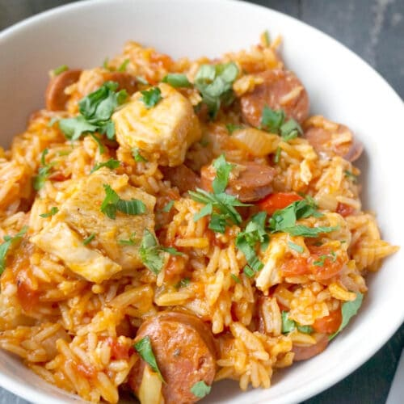

Jambalaya
A quick and easy chicken and chorizo jambalaya. Made by James.

Ingredients
- Chicken breast
- Chorizo sausage
- Onion
- Garlic
- Red & green peppers
- Can of chopped tomatos
- Rice
- Cajun seasoning
- Paprika
- Chicken stock
- Fresh Parsley
How to make
- Add one large onion and several cloves of garlic to a large casserole dish and allow them to soften for 4-5 minutes
- Add the chopped chicken breast with some cajun seasoning and paprika and stir until the chicken is browed
- In a seperate pan, add the chopped chorizo sausage as well as the chopped red and green pepper. Allow to cook for 8-10 minutes
- Combine the cooked chorizo and peppers with the chicken and add the canned tomatos
- Pour in approx 400ml of chicken stock and add the rice
- Leave to simmer for 25 minutes to allow the rice to cook
- Serve into large bowls with some fresh parsley to garnish
Back to hompage